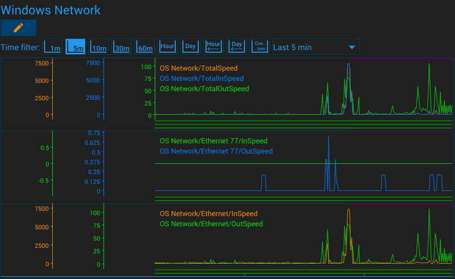

{#header.html#}
{%title=Monitoring the activity of Windows network interfaces%}
{%description=Monitoring the activity of Windows network interfaces%}
Monitoring the activity of Windows network interfaces
One of the interesting uses of the GazerNode is to monitor the intensity
of use of the network interfaces of the operating system.
This can determine what time of day the main traffic is coming.
This can be useful for determining the reasons for the load on the network infrastructure.
The GazerNode has a special unit that has no settings.
You just need to add it to the system and it will record the speed of
the current traffic in the context of network interfaces every second.

Tech details
To obtain information about network interfaces, the API call GetIfEntry2 is used, which fills the structure MIB_IF_ROW2.
Only some of the elements of this structure are written to the data items:
| InOctets | The number of bytes of data received without errors through this interface. This value includes bytes in unicast, broadcast, and multicast packets. |
| OutOctets | The number of bytes of data transmitted without errors through this interface. This value includes bytes in unicast, broadcast, and multicast packets. |
Relevant Sensors
Windows Network Unit
{#bottom.html#}